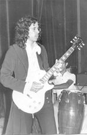
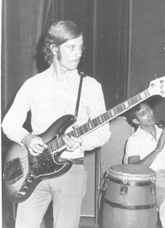
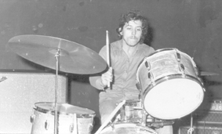
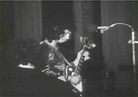
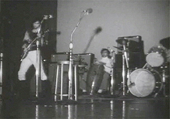
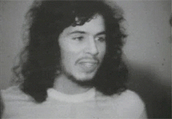

(11/1972
- 12/1974)
San Antonio de los Altos, Venezuela
Piezas originales de Emilio Mendoza con estilo fusión de
rock/jazz con música tradicional de Venezuela.

 
Concierto en la Casa de la Cultura, Plaza Bolívar, Los
Teques, 12-1972.

 
Concierto de Rock Experimental en el Liceo San
José, Los Teques, 07-06-1973,
junto a los grupos de Henrique Lazo y Apocalipsis.
Estas fotos pertenecen a la película del concierto, realizada
por Pedro Galindo en 16mm, lamentablemente sin audio. Se
convirtió en un video y se le insertó la grabación de la pieza
Giros en versión del grupo Akurima
(2005), ya que esta pieza se compuso y se estrenó con el grupo
Catálysis en 1972 y es la que estaba tocando al principio de
la película muda. En esta pieza en grabación de
Akurima, aparece el primer solo de Emilio al estilo
bandoleado en la guitarra.
GIROS
- Catálysis 1973, película de 16 mm muda,
grabadapor Pedro Galindoen
vivo en el concierto de junio 1973.
Integrantes:
Emilio Mendoza
Guitarra
eléctrica, dirección
Giovanni DiBartolomeo Teclados
Victor Suárez
Bajo eléctrico
Manuel
Batería
César
Monroy
Congas
Principales
presentaciones(de 24
conciertos):
Casa de la Cultura, Los
Teques, edo. Miranda, 12-1972
Liceo
San José, Los Teques, 7-6-1973, junto a Henrique
Lazo y Apocalipsis (luego "PTT y La Misma Gente")
Feria
de la Virgen de Fátima, Los Teques, 1974
Show de Richard Herr, RCTV Canal 2,
Caracas, 1974, tocando en vivo en televisión.